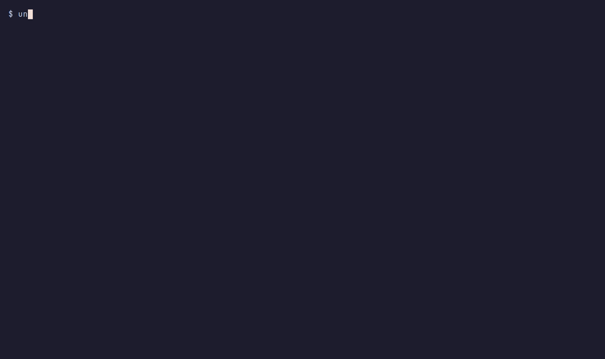

One interface
Every agent gets the same transcript, keybindings, model and effort pickers, and session resume.
● open source terminal UI · Linux & macOS · AGPL-3.0
unharness runs Claude Code, Codex, pi, Antigravity and any Agent Client Protocol agent behind one interface. Same transcript, keys, permission prompts and resume, whichever agent is running, and you can switch agents mid-conversation without losing context.
$ curl -fsSL https://github.com/Liquescent-Development/unharness/releases/latest/download/unharness-installer.sh | sh
$ brew install Liquescent-Development/tap/unharness
$ cargo install --locked --git https://github.com/Liquescent-Development/unharness
Building from source needs Rust 1.89+. Then run unharness doctor to see which agents it found.

↳ Claude Code fixes a bug behind a permission prompt, then /harness codex and Codex picks up the same conversation.
what you get
Every agent gets the same transcript, keybindings, model and effort pickers, and session resume.
/harness codex hands the conversation to another agent. Switching back resumes the first agent's own session.
Landlock on Linux and sandbox-exec on macOS confine the whole agent process: it writes only to your project and cannot read your cloud and signing credentials.
ask means askNothing writes, runs or reaches out without your answer, on every harness that offers the policy. "Always allow" rules belong to unharness and apply to every agent.
Go back to any earlier prompt and restore the working tree to how it was then, on any harness. Checkpoints never touch your .git.
MCP servers, skills and AGENTS.md are set up once and handed to each agent in the form it understands.
harnesses
unharness drives the vendor CLIs you have installed and signed in to. Each harness declares what it can do, and anything it lacks shows up as a caveat instead of failing silently. We say what we have run.
-H claudeClaude Coderecorded-H codexCodexrecorded-H pipirecorded-H agyAntigravityrecorded-H <name>Any ACP agent from your configclaude-agent-acp, codex-acp recorded-H geminiGemini CLI, OpenCode, Goose, Copilot, Cursor, Qwen, KiroACP presets, not yet runquick start
$ unharness doctor # what unharness found
$ unharness # TUI with the default harness
$ unharness -H codex "Refactor the parser" # pick a harness, start with a prompt
$ unharness --resume # resume the latest conversation
$ unharness -p "Summarise src/" # headless print modePolicies: ask · accept-edits · auto · bypass. The sandbox needs Linux 6.2 or newer; the macOS backend has not been run on a Mac yet.
documentation
config.toml referenceAGENTS.md and skills across agents